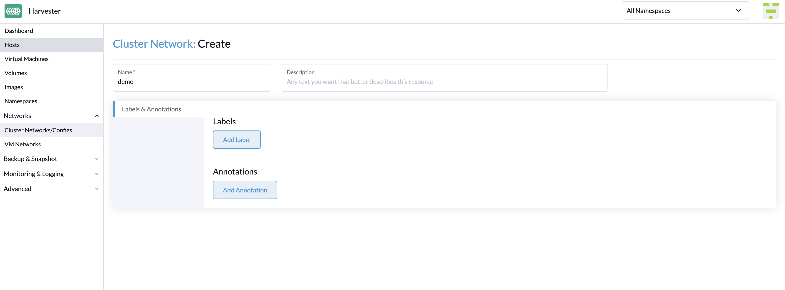
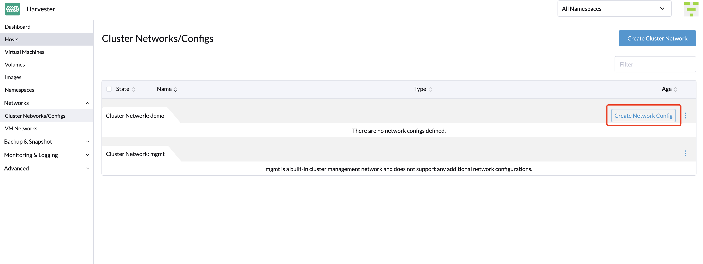
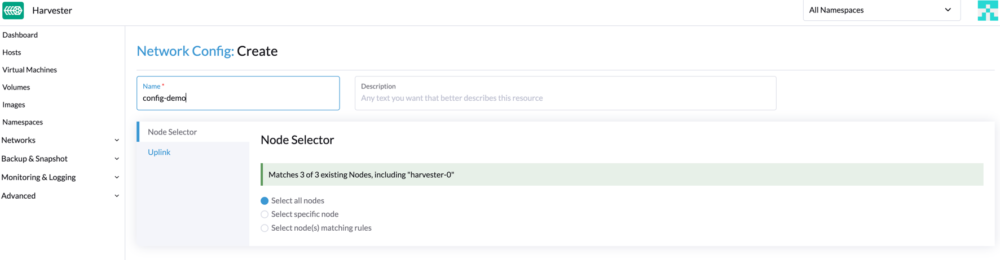

Cluster Network
Concepts
Cluster Network
In Harvester v1.1.0, we introduced a new concept called cluster network for traffic isolation.
The following diagram describes a typical network architecture that separates data-center (DC) traffic from out-of-band (OOB) traffic.
We abstract the sum of devices, links, and configurations on a traffic-isolated forwarding path on Harvester as a cluster network.
In the above case, there will be two cluster networks corresponding to two traffic-isolated forwarding paths.
Network Configuration
Specifications including network devices of the Harvester hosts can be different. To be compatible with such a heterogeneous cluster, we designed the network configuration.
Network configuration only works under a certain cluster network. Each network configuration corresponds to a set of hosts with uniform network specifications. Therefore, multiple network configurations are required for a cluster network on non-uniform hosts.
VM Network
A VM network is an interface in a virtual machine that connects to the host network. As with a network configuration, every network except the built-in management network must be under a cluster network.
Harvester supports adding multiple networks to one VM. If a network’s cluster network is not enabled on some hosts, the VM that owns this network will not be scheduled to those hosts.
Please refer to network part for more details about networks.
Relationship Between Cluster Network, Network Config, VM Network
The following diagram shows the relationship between a cluster network, a network config, and a VM network.

All Network Configs and VM Networks are grouped under a cluster network.
-
A label can be assigned to each host to categorize hosts based on their network specifications.
-
A network config can be added for each group of hosts using a node selector.
For example, in the diagram above, the hosts in ClusterNetwork-A are divided into three groups as follows:
-
The first group includes host0, which corresponds to
network-config-A. -
The second group includes host1 and host2, which correspond to
network-config-B. -
The third group includes the remaining hosts (host3, host4, and host5), which do not have any related network config and therefore do not belong to
ClusterNetwork-A.
The cluster network is only effective on hosts that are covered by the network configuration. A VM using a VM network under a specific cluster network can only be scheduled on a host where the cluster network is active.
In the diagram above, we can see that:
-
ClusterNetwork-Ais active on host0, host1, and host2.VM0usesVM-network-A, so it can be scheduled on any of these hosts. -
VM1uses bothVM-network-BandVM-network-C, so it can only be scheduled on host2 where bothClusterNetwork-AandClusterNetwork-Bare active. -
VM0,VM1, andVM2cannot run on host3 where the two cluster networks are inactive.
Overall, this diagram provides a clear visualization of the relationship between cluster networks, network configurations, and VM networks, as well as how they impact VM scheduling on hosts.
Cluster Network Details
Built-in Cluster Network
Harvester provides a built-in cluster network called mgmt. It’s different from the custom cluster network. The mgmt cluster network:
-
Cannot be deleted.
-
Does not need any network configuration.
-
Is enabled on all hosts and cannot be disabled.
-
Shares the same traffic egress with the management network.
If there is no need for traffic separation, you can put all your network under the mgmt cluster network.
Custom Cluster Network
You are allowed to add the custom cluster network, which will not be available until it’s enabled on some hosts by adding a network configuration.
|
Before creating a new cluster network, ensure that the hardware requirements are met. The witness node is generally not involved in the custom cluster network. |
How to create a new cluster network
-
To create a cluster network, go to the Networks > ClusterNetworks/Configs page and click the Create button. You only need to specify the name.
 -
Click the Create Network Config button on the right of the cluster network to create a new network configuration.
 -
In the Node Selector tab, specify the name and choose one of the three methods to select nodes where the network configuration will apply. If you want to cover the unselected nodes, you can create another network configuration.
The method Select all nodes works only when all nodes use the exact same dedicated NICs for this specific custom cluster network. In other situations (for example, when the cluster has a witness node), you must select either of the remaining methods.
-
Click the Uplink tab to add the NICs, and configure the bond options and link attributes. The bond mode defaults to
active-backup.
|
|
Starting with Harvester v1.1.2, Harvester supports updating network configs. Make sure to stop all affected VMs before updating network configs. To simplify cluster maintenance, create one network configuration for each node or group of nodes. Without dedicated network configurations, certain maintenance tasks (for example, replacing old NICs with NICs in different slots) will require you to stop and/or migrate the affected VMs before updating the network configuration. |